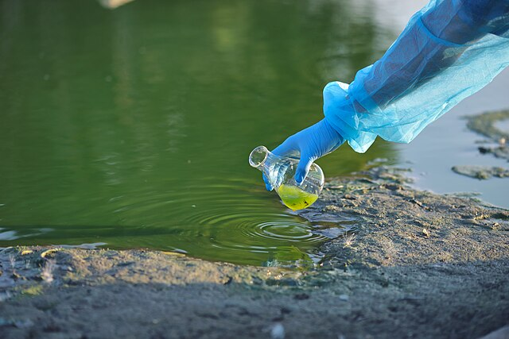

Thumbnail image source: Wikimedia Commons (2021), “Water testing contaminated water from lake”, CC BY-SA 4.0.
{kind=link}
Can Cheap Sensors Help Us Monitor Nitrate in Rivers?
Rivers are the lifeblood of our ecosystems. They supply water for people, agriculture, and industry, and they provide habitats for countless species. But rivers are vulnerable to pollution, and one key culprit is nitrate.
At low levels, nitrate is a natural nutrient. At high levels, it can fuel algal blooms, reduce oxygen, and kill fish or other aquatic life. Monitoring nitrate helps managers protect rivers — but there’s a problem.
Direct nitrate sensors are expensive, prone to failure, and not available everywhere. This raises an important question:
üëâ Can common, cheaper sensors already used in rivers provide reliable information about nitrate?
This blog explores a study by Kermorvant et al. (2023) that tested this idea using high-frequency data from three very different rivers in the United States.
Study Sites
Researchers collected two years of high-frequency measurements from rivers across three climates:
- Arikaree River (Colorado) – A semi-arid river with intermittent flow, heavily influenced by agriculture.
- Caribou Creek (Alaska) – A subarctic stream underlain by permafrost, where sensors are removed during winter freeze.
- Lewis Run (Virginia) – A temperate stream influenced by both agricultural and urban activity.
These rivers differ dramatically in climate, land use, and flow regimes — making them a tough test for any general monitoring framework.
Table 1. Characteristics of the three study sites (adapted from Kermorvant et al., 2023).
Methods: A Two-Step Modelling Approach
To answer the question, researchers combined two statistical tools:
- Generalised Additive Model (GAM)
- Handles curved, non-linear relationships.
- For example, nitrate might increase with temperature up to a point, then level off.
- Handles curved, non-linear relationships.
- ARIMA (Auto-Regressive Integrated Moving Average)
- A time-series model that captures cycles and patterns over time.
- Accounts for daily (diel) and seasonal changes in rivers.
- A time-series model that captures cycles and patterns over time.
Together, this two-step model explained ~99% of nitrate variation across all sites.
In simple terms:
- GAMs captured how sensor values relate to nitrate.
- ARIMA filled in the predictable time-based patterns that the GAM couldn’t.
Results
Overall fit
- GAMs alone explained 75–85% of variation.
- Adding ARIMA raised the accuracy to ~99% at every site.
Variable importance
The same five cheap sensors mattered everywhere:
- Conductivity
- Dissolved oxygen
- Temperature
- Turbidity
- Water level
But their importance varied by site:
- Caribou (Alaska) → Conductivity strongest (~10%).
- Lewis Run (Virginia) → Conductivity again most important (>15%).
- Arikaree (Colorado) → No single variable dominated; instead, time cycles mattered most.
Figure 1. Relative importance of cheap sensors in explaining nitrate variation (adapted from Kermorvant et al., 2023).
Why This Matters for Managers
This study has big practical implications:
- ✅ Cheaper monitoring → If nitrate sensors fail or are too expensive, managers can rely on common sensors already deployed in rivers.
- ✅ Filling gaps → Models can reconstruct nitrate when data are missing, such as during frozen winters in Alaska.
- ✅ Scalable approach → The same framework worked in three very different rivers, suggesting it can be applied widely.
- ✅ Decision support → Agencies can focus resources on a core set of sensors rather than expensive extras.
Limitations
Of course, no study is perfect.
- ⚠ Not a universal model → Each site needs its own fitted version; transferability is about the framework, not the coefficients.
- ⚠ Data gaps → Frozen rivers, dry periods, and sensor outages reduce usable data.
- ⚠ Computational load → Large datasets take time to model.
- ⚠ Site-specific importance → While the same variables matter everywhere, their strength differs by site.
Conclusion
A simple two-step model using cheap sensor data can explain nearly all nitrate variation across rivers in very different climates.
The key message is clear: with the right models, managers don’t always need expensive nitrate sensors to keep rivers healthy.
This makes monitoring:
- Cheaper
- More reliable
- More adaptable
And most importantly, it helps protect ecosystems that depend on clean, well-monitored water.
Reference
Kermorvant, C., Abbott, B. W., Chaplin, B., Brinck, S., Cole, L. E. S., Holgerson, M. A., … Bishop, K. (2023). Understanding links between water-quality variables and nitrate concentration in freshwater streams using high frequency sensor data. PLOS ONE, 18(6), e0287640. https://doi.org/10.1371/journal.pone.0287640
Wikimedia Commons. (2021, July 28). Water testing contaminated water from lake [Photograph]. Wikimedia Commons. https://commons.wikimedia.org/wiki/File:Water_testing_contaminated_water_from_lake.jpg